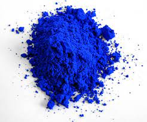
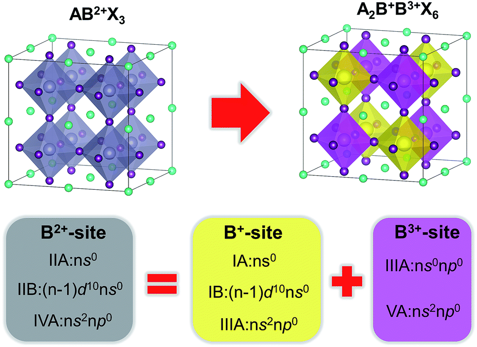

Subramanian Research Group
Winter 2021-Summer 2023
Click here for the research website
In inorganic chemistry, we make use of the transition metals spannin the entire periodic table. We aim to utilize the transition
metals and their unique properties to design material for real-world application. My research interests on these materials
seek to uncover their applications in electonics, thermoelectrics, electrcatalysis, high K dielectrics, photocatalysis, solar fuels and energy storage.
An overarching theme of my research seeks to understand the structure-property relationship of such material.
In the Subramanian Research Group, we focus on solid-state synthesis for the purpose of creating novel inorganic
solid-state functional materials. These materials of interest can be used and are characterized for their properties
in electronics, conductivty, magnetic potential, dielectric and thermoelectric, and high performance color pigments.
Dr. Mas Subramanian is Milton Harris Chair of Material Science and the PI at the time the novel blue pigment, known as YInMn Blue or Oregon Blue, first surfaced from his labortaory. Since then, pigments and their performance has
been a notable emphasis in the Subramanian Research Group.

Structure-Property Relationship of Various Nonstoichiometric Perovskite Solid Solutions
Perovskites have a general formula ABX3, and have the same type of crystal structure of calcium
titanate oxide (CaTiO3). A double pervoskite has a structure when half of the "B" site cations of the structure is
replaced by another "B" cation, so would have the structure A2BB'X6. In this project, we replace certain coordinated
atoms of a previously researched double pervoskite with more economical and less hazardous chemicals for their
characterization. The goal of this project is to synthesize solid solutions of nonstoichiometric compounds using traditional solid-state synthesis techniques. Characterization data is collected for various solid solutions to better understand the structure-property relationships through various compositions.
the generic formula ABO3, an oxidized metal of the B-site is substituted and charge compensated with a metal ion of different oxidation.
In this project, James synthesized several perovskites with different percent compositions, prepped and ran the powders for structural characterization. From there, the samples were shaped into pellets and prepared for dielectric data. Since varying the composition content affected color, colorimeter test were performed to analyze for light absorbance. Magnetic properties are the last thing tested for a full characterization profile of these materials.

Double Perovsktites with Enhanced Thermoelectric Properties
By synthesizing a variety of double perovskites that have the formula A2B2O6, our goal is to have a layered perovskites (obtaining the double perovskite structure) with enhanced thermoelectric properties. The study is based on synthesizing La2MM'O6
compounds where M and M' are 3+ transition metal cations. James synthesized a series of double perovskites and tested for traditional solid state synthesis and nitrate synthesis techniques.
Once synthesized, the powders undergo structural characterization, pressed into pellets, polished with silver, and tested for electrical insulation. Dielectric measurements were performed at increasing temperatures to determine these material's dielectric constant
Electroceramics Group
Fall 2021-Spring 2022
James worked with the Electroceramics Group at Oregon State University under the mentorship of Dr. David Cann. This project involved collaboration
with an interntational electronics company for the research and development of a new type of cercamic capacitor.
Temperature-Resistant Electronic Capacitors
Ceramic composite are commonly used in electronic materials, such as in capacitors. In this project, we use ceramic composites based off of perovskite structures of various lanthanide and rare-earth metals to
discover which composite can be utilized as capacitor materials in cellphones. The material must have high delectric constant and low dielectric loss, and be electronically stable under wide ranges of temperatures.